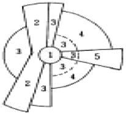
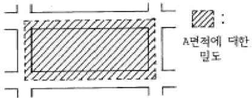
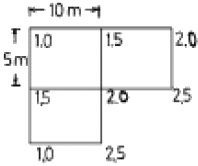
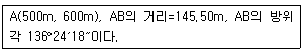
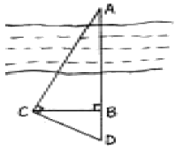
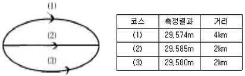
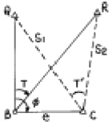

도시계획기사 (2005-03-20 기출문제)
1과목: 도시계획론
1. 도시정부의 자유재량에 맡겨지는 임의적 서비스에 속하는 것은?
- 경찰서비스
- 소방서비스
- 쓰레기처리 서비스
- 문화적 서비스
(정답률: 알수없음)

2. 도시의 속성을 경험적 연구에 의해 사실, 원인, 결과를 밝혀 내려는 접근방법은?
- 규범적 접근방법
- 처방적 접근방법
- 생태론적 접근방법
- 서술적 접근방법
(정답률: 알수없음)
3. 다음 중 단일도심 도시(monocentric city)에서 통근비가 하락할 때 나타나는 현상은?
- 도심에 가까운 위치에 대한 공간수요가 증가한다.
- 외곽지역에 거주하는 가구의 불이익이 감소한다.
- 단일 도심 모형의 지대곡선의 기울기가 급격해진다.
- 전반적으로 도시면적(주거지 면적)이 감소한다.
(정답률: 알수없음)
4. 도시성장과 중심지 이론을 정립한 사람은?
- 발터 크리스탈러(Walter Christaller)
- 톰슨(W.R.Thompson)
- 페루(F.Peroux)
- 리차드 마이어(R.Meier)
(정답률: 알수없음)
5. 하워드(Howard)의 전원도시의 조건인 것은?
- 자급자족 도시로 성장하기 위해 도시주위에 공업지대를 확보
- 도시의 계획인구 규모는 3만명 이하
- 도시 성장과 번영에 의한 개발이익의 일부는 환수
- 토지는 영구히 사유화
(정답률: 알수없음)
6. 도시 가로변 건물의 스카이라인 설정은 어떠한 이유에서 하는가?
- 지역이 갖고 있는 도시미의 창출, 장소성의 부각, 도시 공간의 이미지 제고
- 가로변 건물의 연속성과 고도제한을 위해
- 도시민, 방문객을 위한 방향성 조정
- 건물높이의 혼잡에서 오는 미관상 문제를 조절
(정답률: 알수없음)
7. 신도시개발의 배경으로서 가장 관련이 없는 것은?
- 신도시는 새로운 산업의 입지 및 유입 인구의 수용을 위해 개발된다.
- 신도시 건설의 배경과 필요성은 국가마다 다르다.
- 근대적 신도시는 19세기말 이래 미국에서 그 유래를 찾는다.
- 역사적으로 새로운 도시의 건설은 도시의 오랜 역사와 같다.
(정답률: 알수없음)
8. 다음 중 환지방식의 도시개발사업의 단점이 아닌 것은?
- 토지의 형질 및 이용의 변경을 목적으로 하는 것으로 지상물인 건축물을 포함한 일체적인 도시환경을 실현하는 것이 아니다.
- 토지의 정리를 목적으로 종전의 권리를 공평하게 배분 하고 환지처분을 원활히 하는 것에 주안점을 두고 설계가 이루어지기에 획일적이고 경직된 계획으로 되기 쉽다.
- 택지가 세분되고 권리관계가 복잡한 기성 시가지에서는 시행이 힘들다.
- 감보율적용은 환지방식에 관계없이 공통적으로 적용함으로써 과소토지가 발생할 수 있다.
(정답률: 알수없음)
9. 계획이론과 그 주창자의 연결이 옳은 것은?
- 점진적 계획 - 린드블룸
- 교류적 계획 - 다비도프
- 옹호적 계획 - 프리드만
- 종합적 계획 - 꼬르뷔제
(정답률: 알수없음)
10. 르 꼬르뷔제(Le Corbusier)의 빛나는 도시(Radiant city)에 대한 설명으로 틀린 것은?
- 중심부를 고층 고밀화 한다.
- 넓은 오픈스페이스와 공원을 확보한다.
- 저밀의 전원적 도시를 개발한다.
- 고속 교통기관을 도입한다.
(정답률: 알수없음)
11. 그림은 선형이론에 따른 도시공간 구조의 형성을 나타내고 있다. "3"으로 표시된 지역의 토지이용은 무엇인가?

- 중류 주거 생활
- 도매 및 경공업 활동
- 하층 주거 생활
- 중심 업무 기능(CBD)
(정답률: 알수없음)
12. 도시공간구조는 동태적 특성을 띠고 확장, 축소, 재배치 되어진다. 다음 중 도시공간구조에 미치는 직접적인 변수와 관계가 가장 먼 것은?
- 교통, 통신의 발달
- 시민들의 사회적 행태 변화
- 공간 정책의 변화
- 주변도시 인구의 증가
(정답률: 알수없음)
13. 다음 중 외부불경제(diseconomy)를 바르게 설명한 것은?
- 도시의 재화나 용역이 외부로 유출됨으로서 나타나는 손해
- 외부적 효과를 나타낼 만한 정도의 도시 규모
- 도시의 지나친 거대화로 인한 불이익
- 도시 경제의 외부 의존도
(정답률: 알수없음)
14. 페리(C. A. Perry)의 근린주구에 대한 설명으로 옳지 않은 것은?
- 주거지개발에 적용할 물리적인 기본단위로서 초등학교, 작은공원, 운동장, 작은가게 등 근린단위를 제안했다.
- 기존 도시의 문제점을 개선하기 위해서는 여가공간의 형성과 근린의식의 강화가 필수적이다.
- 혼잡한 기존도시의 익명성에 대해 공공시설을 확충하고 공공활동을 유도하여 고립성 회복을 주장하였다.
- 근린주구는 신체적인 접촉에 의한 근린주구, 사회적 면식에 의한 근린주구, 단위근린주구로 분류된다.
(정답률: 알수없음)
15. 지속가능한 도시개발의 원칙에 포함되기 어려운 관점은?
- 자족적 도시기능의 확보
- 시민참여의 확대
- 현재기준의 충족
- 자연법칙의 존중
(정답률: 알수없음)
16. 일반적으로 도시화의 진행 과정에서 초기단계에 나타나는 특성은?
- 탈도시화(脫都市化)
- 재도시화(再都市化)
- 집중적 도시화(集中的 都市化)
- 교외화(郊外化)
(정답률: 알수없음)
17. 다음 중 도시화가 진전되기 위한 필요조건이 아닌 것은?
- 자치적 도시정부의 구성
- 인구의 증가와 이동
- 자연조건 등의 환경적 요인
- 쇄신과 기술적 진보
(정답률: 알수없음)
18. 한 국가의 도시 규모 분포가 순위 규모 법칙(rank-size rule)을 따라 정상적인 분포를 이루고 있다면 데비스(K.Davis)의 종주화 지수는 어떻게 되는가?
- 0.11
- 0.92
- 1.00
- 1.11
(정답률: 알수없음)
19. 우리나라 도시관리에서 공공서비스의 전달체계정비를 위해서 개선되어야 할 항목과 관계가 먼 것은?
- 대민 행정의 강화 및 질적 향상
- 행정조직간의 즉시적 정보교환 운영 체계구축
- 정보교환 과정에 시민의 적극 참여
- 도시지역 발전에 관한 종합 조정권한 확보
(정답률: 알수없음)
20. 도시기능에 대한 다음 설명 중 타당하지 않은 것은?
- 도시의 주요기능은 각 도시의 특성과 발달과정에 따라 달라질 수 있다.
- 인간활동과 도시기능, 도시구조는 상호 영향을 미치게 된다.
- 도시활동은 장소내 활동과 장소간 활동으로 구분되며 장소간 활동이 투영된 공간을 회로공간(回路空間)이라 한다.
- 게데스(P. Geddes)는 도시의 기본적인 기능을 생활기능, 생산기능, 위락기능, 연계기능으로 구분하였다.
(정답률: 알수없음)
2과목: 도시설계 및 단지계획
21. 계획단위개발(PUD) 방식에 의한 주거지 계획의 설명으로 틀린 것은?
- 분리된 필지를 기본으로 주택을 배치한다.
- 도로와 하수도 등 기반시설을 계획 내용에 따라 쉽게 배치할 수 있다.
- 전체 개발지에 대해 밀도, 건폐율 등의 규정을 적용한다.
- 주택과 외부공간의 배치가 자유롭다.
(정답률: 알수없음)
22. 유치원 1개소당의 부지면적 규모로서 가장 알맞은 것은?
- 500 ∼ 1,000m2
- 1,000 ∼ 1,500m2
- 1,500 ∼ 2,000m2
- 2,000 ∼ 2,500m2
(정답률: 알수없음)
23. 등고선 간격에 의한 방법으로 경사분석을 할 때 2 m의 등고선 간격(H)으로 5%의 경사도(G)를 얻으려면 등고선과 등고선 간의 수평거리(D)는 얼마로 하는가?
- D = 25 m
- D = 10 m
- D = 40 m
- D = 100 m
(정답률: 알수없음)
24. 기능별 구분에 의한 도로의 종류로서 보조간선도로와 집산 도로의 배치간격의 기준은?
- 1,000m 내외
- 500m 내외
- 250m 내외
- 120 - 150m 내외
(정답률: 알수없음)
25. 지형의 기복이 심한 단지의 가로망 계획의 원칙으로 알맞는 것은?
- 직선 가로를 원칙으로 한다.
- 공사 경비를 우선적으로 고려하고, 가로경관은 고려할 필요가 없다.
- 토공사비를 절감하기 위해 도로의 위계를 단순화한다.
- 불규칙한 가구나 획지에는 공원, 공지를 배치할 수 있도록 계획한다.
(정답률: 알수없음)
26. 주택 단지 내부의 도로망 체계(circulation system)에서 소규모 가로(街路)형태로 가장 부적합한 유형은?
- 방사형(radial type)
- 선형(linear type)
- 격자형(grid type)
- 환상형(loop type)
(정답률: 알수없음)
27. 밀도에 관한 다음 설명 중 옳은 것은?
- 밀도 규제의 목적은 공공의 건강과 안녕유지, 지가의 통제를 도모하는데 있다.
- 주거지의 밀도는 야간 상주인구를 기준으로 한다.
- 순주거밀도는 주거단위수/순주거용지 + 주변도로 면적에 의해 구해진다.
- 고도지구는 좋은 주거환경을 유지하기 위해 인구밀도를 규제하는 지구이다.
(정답률: 알수없음)
28. 다음 중 환경친화적 단지계획의 기본목표가 아닌 것은?
- 자연생태적 오픈 스페이스의 창출
- 매력있는 도시경관의 창조
- 에너지 절약적 동선체계의 구성
- 적정한 물질 순환의 유지
(정답률: 알수없음)
29. 다음은 시대순에 따른 단지계획 이론가의 순서이다. 맞는 것은?
- E.Howard - C.A.Perry - F.Gibberd
- C.A.Perry - E.Howard - F.Gibberd
- F.Gibberd - C.A.Perry - E.Howard
- C.A.Perry - F.Gibberd - E.Howard
(정답률: 알수없음)
30. 밀도의 측정을 할 때 기준이 되는 가구단위면적을 그린 도면이다. 다음의 밀도 종류와 관계되는 것은?

- 총밀도
- 순밀도
- 근린밀도
- 중밀도
(정답률: 알수없음)
31. 도시계획시설의결정ㆍ구조및설치기준에 의한 용도지역별 도로율이 옳은 것은?
- 주거지역 : 28 ∼ 37%
- 상업지역 : 20 ∼ 27%
- 공업지역 : 10 ∼ 20%
- 녹지지역 : 25 ∼ 30%
(정답률: 알수없음)
32. 6 ha의 대지에 1호당 순대지 200m2의 단독주택 필지를 계획할 때 몇 호 건설이 가능한가? (단, 순 주택용지율 60%, 도로 및 기타 공공용지율 40%)
- 120호
- 150호
- 180호
- 300호
(정답률: 알수없음)
33. 근린주구개념에 의한 초등학교의 적정 유치거리는?
- 200 ∼ 400m
- 400 ∼ 800m
- 800 ∼ 1200m
- 1200 ∼ 1500m
(정답률: 알수없음)
34. 건폐율이 일정할 때 다음 중 옳은 것은?
- 평균층수가 낮아지면 용적률은 높아진다.
- 평균층수가 높아지면 용적률도 높아진다.
- 건폐율이 일정하면 용적률도 일정하다.
- 용적률과 건폐율은 아무런 상관이 없다.
(정답률: 알수없음)
35. 다음 부지분석단계 가운데 자료들의 항목별 점검표(checklist) 작성은 어느 단계에서 가장 필요한가?
- 조사준비단계
- 기초조사단계
- 본격조사단계
- 정리분석단계
(정답률: 알수없음)
36. 단지계획시 고려해야할 사항으로서 가장 관계가 먼 것은?
- 건물을 등고선에 따라 배치시키는 것이 자연지형을 파괴하지 않는 가장 경제적인 방법이다.
- 위요감이 없는 외부공간은 장소성ㆍ식별성ㆍ방어감ㆍ일체감에 유리하다.
- 가로변에 위치한 주거동의 주조색은 원색을 피하고 혼합색으로 한다.
- 보행자 전용도로의 최소폭은 1.5 m 이상으로 하며, 자전거전용도로의 폭은 1.1 m 이상으로 한다.
(정답률: 알수없음)
37. 단지조사의 원칙으로 가장 올바른 것은?
- 단지조사자료의 수집은 계획과정 내내 지속된다.
- 본격적인 조사에 앞서 현지답사는 선택적이다.
- 조사 초기에 가능한 모든 자료를 수집해야 한다.
- 단지조사 자료체계는 어떤 계획에서나 동일하다.
(정답률: 알수없음)
38. 단지계획의 전형적인 목표가 아닌 것은?
- 기능의 적합성
- 선택의 다양성
- 건강과 쾌적성
- 미관 위주의 통일성
(정답률: 알수없음)
39. 첨단산업단지(尖端産業團地)의 입지요건(立地要件)과 가장 관련이 없는 것은?
- 노동력 확보 용이
- 공업분산
- 학술집적
- 교통편리
(정답률: 알수없음)
40. 주거환경개선사업에 의한 재개발에 관한 설명으로 틀린것은?
- 기존의 도시재개발법에 의한 주택개량재개발사업으로 시행해 오던 것을 도시저소득층의 밀집주거지에서 별 효과가 없었으므로 시행되었다.
- 도시 저소득 주민의 주거환경 개선을 위한 영구 조치 법률에 의한 사업이다.
- 현지 개량방식과 공동주택 방식으로 구분된다.
- 전반적이고 기본적인 재개발기본계획이 없이 주거환경 개선계획에 의해 사업이 추진되고 있다.
(정답률: 알수없음)
3과목: 도시개발론
41. 다음 중 1차원 대상물의 양식이 아닌 것은?
- 영상소(pixel)
- 선분
- 연결선(link)
- 사슬(chain)
(정답률: 알수없음)
42. 정사각형의 땅을 30m짜리 테이프를 사용하여 측정한 결과 900m2을 얻었다. 이때 테이프가 실제보다 5cm가 늘어나 있었다면 실제면적은?
- 897m2
- 898.5m2
- 901.5m2
- 903m2
(정답률: 알수없음)
43. 해안선(표고 0m)에서 눈높이 150cm인 사람이 수평선을 바라볼 때 수평선까지의 거리는 약 얼마인가?(단, 양차를 고려하고, 지구반경 R=6,370km, 굴절계수 k=0.14임)
- 4.7km
- 5.7km
- 6.7km
- 8.7km
(정답률: 알수없음)
44. 평판측량에 있어서 연직으로 세운 2.4m 폴 상하부 시준선에 앨리데이드로 측정하여 눈금수가 6 이었다. 평판과 폴 사이의 수평거리는 얼마인가?
- 2.5m
- 14.4m
- 25m
- 40m
(정답률: 알수없음)
45. 지형공간정보체계를 이루는 지형공간정보는 위치정보와 특성정보로 구분할 수 있다. 특성정보 중 대상물의 자연, 인문, 사회, 행정, 경제, 환경적 특징을 나타내는 정보로서 지형공간적 분석이 가능하도록 하는 도형 및 영상정보와 관련된 정보는?
- 지형정보
- 도형정보
- 영상정보
- 속성정보
(정답률: 알수없음)
46. 지형측량의 결과인 등고선도의 이용과 가장 거리가 먼 것은?
- 지적도의 작성
- 노선의 도상선정
- 성토, 절토의 범위결정
- 집수면적의 측정
(정답률: 알수없음)
47. 평판측량에서 평판을 세울 때의 오차 중 측량결과에 가장 큰 영향을 주는 오차는?
- 방향맞추기 오차
- 중심맞추기 오차
- 수평맞추기 오차
- 수직맞추기 오차
(정답률: 알수없음)
48. 다음 중 수평각관측 방법에 대한 설명으로 틀린 것은?
- 단각법은 하나의 각을 1번 관측하는 것으로 시준오차와 읽기오차가 발생된다.
- 배각법은 방위각법에 비해 읽기오차가 크다.
- 각관측법은 수평각 관측법 중 가장 정확한 값을 얻을 수 있다.
- 방위각법은 한 측점 주위의 각이 많을 경우 이용하는 방법으로 삼각측량 및 천문측량에 많이 이용된다.
(정답률: 알수없음)
49. 다음 등고선의 성질 중 옳지 않은 것은?
- 등고선은 분기하지 않고 절벽이나 동굴의 지형 이외에는 교차하지 않는다.
- 동일 등고선 상의 모든 점은 기준면상 같은 높이에 있다.
- 등고선은 하천, 호수, 계곡 등에서는 단절되고 도상에서 폐합하는 일이 없다.
- 등고선은 능선 또는 계곡선과 직각으로 만난다.
(정답률: 알수없음)
50. 그림과 같은 측량결과를 얻었을 때 이 지형의 토공량은? (단, 계획고는 0m로 함)

- 293.5m3
- 283.5m3
- 273.5m3
- 262.5m3
(정답률: 알수없음)
51. 같은 각을 측량한 결과가 1회만 측량한 경우 50°40′38″, 4회 측량한 평균이 50°40′21″, 9회 측량한 평균이 50°40′30″ 였다면 이 각의 최확값은?
- 50°40′28″
- 50°40′29″
- 50°40′30″
- 50°40′34″
(정답률: 알수없음)
52. 기지점 A에서 미지점 B까지의 거리와 방위각을 측정한 결과가 다음과 같았다. B점의 좌표는 얼마인가?

- (600.330, 494.624)
- (494.624, 600.330)
- (700.330, 394.624)
- (394.624, 700.330)
(정답률: 알수없음)
53. 그림에서 ∠ACD = ∠ABC = 90°, BC = 30m, BD = 15m이다. 하폭 AB 는?

- 40m
- 50m
- 60m
- 70m
(정답률: 알수없음)
54. 다음 중 GPS에서 이용되는 좌표체계는?
- WGS 68
- WGS 72
- WGS 84
- WGS 94
(정답률: 알수없음)
55. 다음 중 최소제곱법의 원리를 이용하여 처리할 수 있는 오차는?
- 정오차
- 우연오차
- 누차
- 계통오차
(정답률: 알수없음)
56. A, B 두점간의 고저차를 구하기 위하여 그림과 같이 (1), (2), (3) 코스로 수준측량한 결과가 다음과 같을 때 두 점간의 고저차에 대한 최확값은?

- 29.567m
- 29.581m
- 29.569m
- 27.578m
(정답률: 알수없음)
57. 다음은 지도투영시 일어나는 왜곡에 관한 설명으로 옳지 않은 것은?
- 각이나 면적 등을 곡면에서 평면으로 변환할 때 왜곡이 일어나며 투영은 필연적으로 왜곡을 동반한다.
- 여러 가지의 왜곡을 단일 투영으로 모두 바로 잡을 수는 없으며, 투영법의 선택에 따라 왜곡특성이 변한다.
- 주로 하나의 요소에 대한 왜곡이 최소화되면 그 동안 다른 요소들에 대한 왜곡도 어느 정도 보정이 된다.
- 투영에서 왜곡의 영향을 알아 보기 위해서 지시원을 이용한다.
(정답률: 알수없음)
58. 북쪽을 X축으로 하는 좌표계에서 P1 점 및 P2 점의 좌표가 x1 = -11328.58m, y1 = -4891.49m, x2 = -11616.10m, y2 = -5240.83m일 때 P1P2의 평면거리 S 와 방향각 T는?
- S = 549.73m, T = 129°27′21″
- S = 452.44m, T = 50°32′40″
- S = 452.44m, T = 230°32′40″
- S = 549.73m, T = 309°27′21″
(정답률: 알수없음)
59. 다음 그림과 같은 편심관측에서 T'는 얼마인가 ? (단, S1 = S2 = 2Km, e=0.2m, ø=120°, T=60°)

- 59°59' 43"
- 60°00' 00"
- 60°00' 17"
- 60°00' 34"
(정답률: 알수없음)
60. GPS의 주요구성 중 궤도와 시각 결정을 위한 위성 추적을 담당하는 부분은?
- 우주 부분
- 제어 부분
- 사용자 부분
- 위성 부분
(정답률: 알수없음)
4과목: 국토 및 지역계획
61. 국토계획, 지역계획, 도시계획의 차별성은 다음의 어디에 중점을 두고 있는가?
- 경제적 조건과 수준
- 시간적 차이
- 토지의 이용 상태
- 공간적 범위와 차이
(정답률: 알수없음)
62. 다음 중 국토 및 지역계획의 기능별 분류로서 적절하지 않은 것은?
- 배분적 계획(allocative planning)
- 지역적 계획(regional local planning)
- 성장유도 계획(growth promoting planning)
- 쇄신적 계획(innovative planning)
(정답률: 알수없음)
63. 지역계획 수립과정에서 지역인구 예측모형을 위한 요소모형으로 적합한 것은?
- 선형모형
- 연령 계층별 생존모형
- 지수모형
- 곰페르츠모형
(정답률: 알수없음)
64. 기준년도의 인구구조를 바탕으로 장래의 출생, 사망 및 인구이동 등의 인구변화 요인을 전망하여 장래인구를 추계하는 방법은?
- 대위법
- 지수법
- 인구분단법
- 조성법
(정답률: 알수없음)
65. 지역계획은 조정 및 관리가 잘 되어야 성공적인 계획이 될 수 있다. 다음 사항 중 계획의 조정 및 관리 사항에 해당되지 않는 것은?
- 지역계획 대상지역의 지속적인 조정을 위한 전략이 서 있을 것.
- 해당 계획에 관한 각종 자료 및 정보를 계속하여 갱신 할 수 있는 수정체계(Updating system)가 확립되어 있을 것.
- 집행된 계획의 본래 목적과 결과에 대한 주민들의 여론을 주기적으로 파악할 것.
- 한 번 확정된 계획의 내용을 고수하려는 적극적인 자세를 견지할 것.
(정답률: 알수없음)
66. 지역 소득격차의 측정에 가장 알맞는 방법은?
- 입지상(LQ)
- 투입산출분석(Input/ouput Analysis)
- 지니계수(Gini coefficient)
- 편익비용분석(Benefit cost Analysis)
(정답률: 알수없음)
67. 다음 중 중심지 이론에 관한 설명으로 올바르지 못한 것은 ?
- 중심재화나 서비스의 최대 도달 가능 거리를 시장 범위의 외곽한계라 부른다.
- 중심지 이론은 기본적으로 중심지와 보완지역의 형성과 공간적 분포를 설명하는 이론이다.
- 시장의 원리, 교통의 원리, 행정의 원리 중 중심지간 관계성을 나타내는 K값은 시장의 원리에서 가장 크다.
- 지리적 공간은 자원과 인구가 균등하게 분포되어 있는 균등한 평면공간이라는 것을 기본가정으로 하고 있다.
(정답률: 알수없음)
68. 경제발전과 지역격차의 상관관계를 역"U"자형의 관계라고 설명한 사람은?
- 알론소(Alonso)
- 크리스탈러(Christaller)
- 밀스(Mills)
- 윌리암슨(Williamson)
(정답률: 알수없음)
69. 거점개발의 전략을 통해 기대할 수 있는 효과가 아닌것은?
- 대도시의 중점 발전
- 자원의 집중투자에 의한 효율성 제고
- 지역간 균형 성장의 유지
- 낙후지역의 개발
(정답률: 알수없음)
70. 다음 중 국토 및 지역계획이 갖고 있는 내용상 특성을 가장 잘 표현하고 있는 것은?
- 공간계획의 성격보다는 경제계획의 성격이 강하다.
- 전문분야별 계획(도로, 산업, 환경 등)을 열거한 계획이다.
- 공간계획인 동시에 전문분야별 계획으로서 종합계획이다.
- 산업진흥 중심의 계획이다.
(정답률: 알수없음)
71. 로렌츠곡선(Lorenz Curve)이 지역계획에서 쓰이는 경우는?
- 지역주민의 소득분배 현황을 추계할 때
- 지역경제 구조의 변천을 추계할 때
- 지역고용 구조 중 비농림업 부문 종사자의 비율을 추계 할 때
- 지역 총 생산량(G.R.P)중 공업부가가치의 비율을 추계 할 때
(정답률: 알수없음)
72. 수도권은 아래 지역구분 중 어디에 근거한 것인가?
- 동등성
- 결절성
- 동일성
- 합리성
(정답률: 알수없음)
73. 우리나라 국토계획의 본질적 특성이라고 볼 수 없는 것은?
- 종합성(綜合性)
- 장기성(長期性)
- 지역성(地域性)
- 상위성(上位性)
(정답률: 알수없음)
74. 케빈 린치(Kevin Lynch)는 도시공간구조를 주로 시각적 공간 인지의 측면에서 파악하고 있다. Lynch가 주장하는 도시의 이미지 형성에 작용하는 인자가 아닌 것은?
- 통로(path)
- 지구(district)
- 광장(Plaza)
- 결절점(node)
(정답률: 알수없음)
75. 포스트 포드주의(fordism)시대의 지역개발 정책의 내용인 것은?
- 제조업의 육성
- 경제적 하부구조의 개선
- 대량생산을 위한 표준화
- 다양한 서비스산업의 육성
(정답률: 알수없음)
76. 국토 및 지역계획 수립과정에서 사용하는 미래예측방법 중 질적인 방법은?
- 요인분석
- 델파이방법
- 다중회귀분석
- 최적화방법
(정답률: 알수없음)
77. 우리나라 지역계획에서 강조되어야 할 이념으로 적합하지 않는 것은?
- 효율성
- 집중성
- 형평성
- 자치성
(정답률: 알수없음)
78. M시의 수출산업 종사인구(Ee)가 50,000인, 지역산업 종사 인구(Es)는 100,000인 이다. M시의 수출산업종사자가 1인 증가하면 총 고용자(Et)는 몇 명 늘어나는가?
- 0.5인
- 2인
- 3인
- 4인
(정답률: 알수없음)
79. 다음 중 거점개발에서 거점이 될 도시는 현재인구가 일반적으로 얼마 이상 되어야 하는가?
- 5만
- 20만
- 50만
- 100만
(정답률: 알수없음)
80. 다음 중 첨단산업의 입지인자로 그 중요도가 가장 낮은 것은?
- 과학 및 공학기술자의 존재
- 산업단지의 존재
- 모험자본의 이용 가능성
- 연구중심대학의 존재
(정답률: 알수없음)
5과목: 도시계획관계법규
81. 다음의 도시계획시설 중 세부시설에 대한 조성계획과 함께 도시계획시설로 결정하지 않아도 되는 것은?
- 항만
- 유원지
- 유통업무설비
- 폐기물처리시설
(정답률: 알수없음)
82. 다음 중 국토의계획및이용에관한법률의 시행령에 의하여 지정된 지구는?
- 방화지구
- 경관지구
- 위락지구
- 방재지구
(정답률: 알수없음)
83. 노외주차장에 설치하는 부대시설에 대한 설명 중 옳지 않는 것은?
- 노외주차장에 설치할 수 있는 부대시설의 총 면적은 주차장 총 시설면적의 20%를 초과할 수 없다.
- 노외주차장에 부대시설로서 관리 사무소, 간이매점, 세차장, 미장원을 설치할 수 있다.
- 노외주차장에 설치할 수 있는 부대시설의 종류, 부대시설이 차지하는 비율에 대하여는 지자체의 조례로 따로 정할 수 있다.
- 노외주차장의 관리 운영상 필요한 편의시설, 조례에 정한 이용자 편의시설은 부대시설로 설치할 수 있다.
(정답률: 알수없음)
84. 수도권정비계획법에 의한 과밀부담금의 산정기준으로 옳은 것은?
- 건축비의 10/100
- 건축비의 20/100
- 건축비의 30/100
- 건축비의 40/100
(정답률: 알수없음)
85. 수도권정비계획법에 의한 인구영향평가를 받아야 할 대규모 개발사업의 기준을 잘못 설명한 것은?
- 계획면적 100만m2이상의 택지개발사업
- 계획면적 100만m2이상의 주택건설사업
- 계획면적 30만m2이상의 도심재개발사업
- 계획면적 30만m2이상의 공업용지조성사업
(정답률: 알수없음)
86. 도시및주거환경정비법에 의하여 정비구역을 지정할 수 있는 자는?
- 시장ㆍ군수
- 시ㆍ도지사
- 건설교통부장관
- 토지 및 건물소유자
(정답률: 알수없음)
87. 공동구의 관리에 관한 아래 설명 중 틀린 것은?
- 공동구는 시장, 군수가 이를 관리한다.
- 공동구의 안전점검은 1년에 1회 이상 실시하여야 한다.
- 공동구의 관리에 소요되는 비용은 연 2회로 분할 납부하게 한다.
- 공동구의 관리비용은 관할 시장 및 군수가 전액 부담한다.
(정답률: 알수없음)
88. 도시공원에 설치할 수 있는 공원시설의 부지면적 중 적합하지 않은 것은?
- 어린이공원 60% 이하
- 근린공원 40% 이하
- 도시자연공원 20% 이하
- 체육공원 60% 이하
(정답률: 알수없음)
89. 건축법상 운전학원은 어느 용도로 분류되는가?
- 근린생활시설
- 교육연구시설
- 자동차관련시설
- 업무시설
(정답률: 알수없음)
90. 택지개발촉진법상 토지개발사업을 시행함에 있어 도시 개발법에 의한 도시개발을 실시할 수 있는 경우는?
- 당해지역의 지가가 인근의 다른 택지개발예정지구의 지가에 비하여 현저히 높아, 환지방식 외의 다른 방법으로는 심히 곤란한 때
- 택지개발예정지구와 도시개발구역이 동시에 결정된 때
- 당해지역의 토지소유자 및 이해관계인이 동의한 때
- 국가, 지방자치단체, 한국토지공사와 대한주택공사 전부가 사업시행을 원하지 않을 때
(정답률: 알수없음)
91. 도시지역안에서 2이상의 용도지역에 걸치는 경우에 도시개발구역으로 지정할 수 있는 기준 면적을 산출하는 식으로 가장 적당한 것은?(면적은 1만제곱미터 이상으로 본다.)
- 주거지역 및 상업지역의 면적 + 공업지역의 면적의 3분의 1 + 자연녹지 지역의 면적
- {주거지역 및 상업지역의 면적 × 공업지역의 면적의 3분의 1 × 자연녹지 지역의 면적}/100
- 주거지역 및 상업지역의 면적 + 공업지역의 면적의 2분의 1 + 공공녹지 지역의 면적
- {주거지역 및 상업지역의 면적 × 공업지역의 면적의 2분의 1 × 공공녹지 지역의 면적}/100
(정답률: 알수없음)
92. 도시계획시설 중 광장의 분류에 해당하지 않는 것은?
- 미관광장
- 경관광장
- 교통광장
- 지하광장
(정답률: 알수없음)
93. 광역 도시권을 대상으로 수립하는 광역도시계획의 내용이 아닌 것은?
- 광역계획권의 공간구조와 기능분담에 관한 사항
- 광역계획권의 녹지관리체계와 환경보전에 관한 사항
- 광역계획권의 토지이용 개발 및 방재에 관한 사항
- 광역시설의 배치ㆍ규모ㆍ설치에 관한 사항
(정답률: 알수없음)
94. 국토기본법상의 국토관리의 기본이념으로서 옳지 않은 것은?
- 국토에 관한 계획 및 정책은 개발과 환경의 조화를 바탕으로 한다.
- 국토를 균형 있게 발전시켜 국가의 경쟁력을 높인다.
- 국토의 지속 가능한 발전을 도모할 수 있도록 국토에 관한 계획 및 정책을 수립얇집행하여야 한다.
- 국토개발에서 투자 효과가 큰 지역을 집중 개발토록 한다.
(정답률: 알수없음)
95. 체육시설설치및이용에관한법률의 다음 설명 중 적절하지 않은 것은?
- 스키장업에는 숙박시설을 설치할 수 있다.
- 골프장 9홀 이상일 때 숙박시설을 설치할 수 있다.
- 골프장업 숙박시설의 높이는 5층을 초과하지 못한다.
- 공공체육시설은 전문체육시설, 생활체육시설, 직장 체육시설로 나눌 수 있다.
(정답률: 알수없음)
96. 국토의계획및이용에관한법률상의 도시계획 시설사업에 대한 단계별집행계획의 수립에 대하여 기술한 사항 중 틀린 것은?
- 특별시장, 광역시장, 시장 또는 군수는 도시계획 시설에 대하여 도시계획 시설 결정의 고시일부터 2년 이내에 단계별 집행계획을 수립하여야 한다.
- 제1단계 집행계획과 제2단계 집행계획을 구분하여 수립하되 3년이내 시행하는 도시계획시설사업은 1단계 집행 계획에 포함되도록 한다.
- 건설교통부장관 또는 도지사가 직접 입안한 도시관리 계획인 경우 건설교통부장관 또는 도지사는 단계별 집행계획을 수립하여 해당 특별시장, 광역시장, 시장, 군수에게 송부할 수 있다.
- 시장, 군수는 집행계획을 공고한 경우 제 1단계 집행 계획에 포함되지 않은 토지에 대하여 가설건축물의 건축을 허가 할 수 있다.
(정답률: 알수없음)
97. 택지개발촉진법상 경미한 변경이 아닌 것은?
- 예정지구 면적의 10% 범위내에서의 확대
- 예정지구 면적의 10% 범위내에서 축소
- 사업비의 10% 범위안에서의 사업비의 증감
- 예정지구 면적의 10%축소 또는 20% 확대하여 전체면적 10% 확대
(정답률: 알수없음)
98. 환지방식이 적용되는 도시개발사업지구의 면적이 12,000평 이고, 토지소유자가 120명이다. 도시개발사업을 시행할 수있는 경우는?
- 토지면적 6,000평 이상, 토지소유자 60명 이상 동의
- 토지면적 8,000평 이상, 토지소유자 60명 이상 동의
- 토지면적 6,000평 이상, 토지소유자 80명 이상 동의
- 토지면적 4,000평 이상, 토지소유자 80명 이상 동의
(정답률: 알수없음)
99. 도시개발사업의 전부 또는 일부를 환지방식에 의하여 시행하고자 하는 경우 환지계획의 작성 내용이 아닌 것은?
- 환지설계
- 토지의 필지별로 된 환지명세
- 청산금지급 예정일
- 체비지 또는 보유지의 명세
(정답률: 알수없음)
100. 다음 중 주차장법시행령에 의하여 노외주차장인 주차전용건축물의 건폐율과 용적률의 최대한도 기준으로 가장 바른 것은?
- 건폐율 : 60%이하, 용적율 : 500%이하
- 건폐율 : 70%이하, 용적율 : 700%이하
- 건폐율 : 80%이하, 용적율 : 1,000%이하
- 건폐율 : 90%이하, 용적율 : 1,500%이하
(정답률: 알수없음)